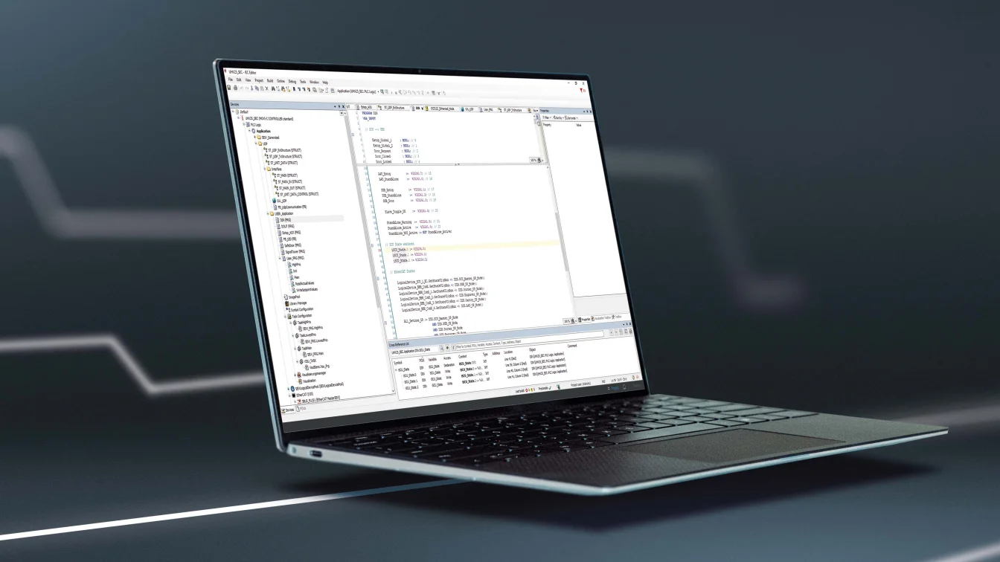

title

Bij softwareontwikkeling is het verifiëren van de functionaliteit essentieel. Dit betekent dat het systeem wordt getest om te zorgen dat het werkt zoals bedoeld. Een goed geteste software vermindert fouten, verbetert de gebruikservaring en waarborgt de kwaliteit.